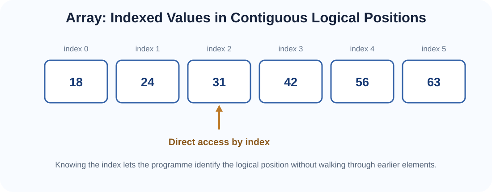
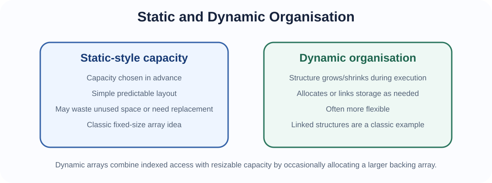
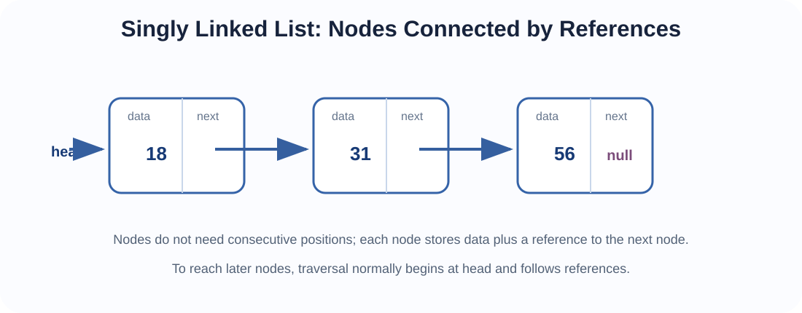
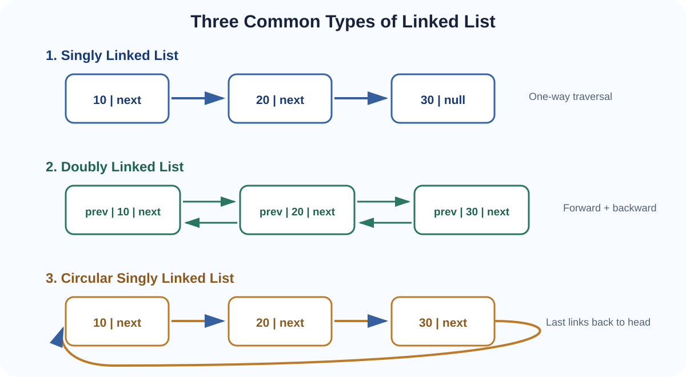
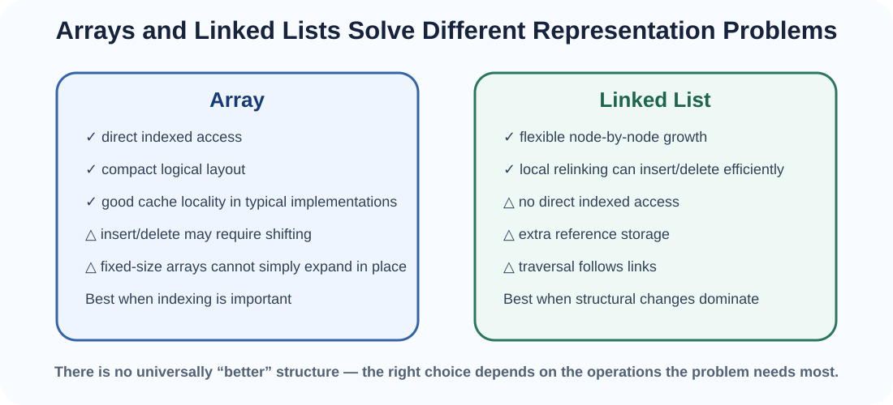

Two foundational representations of ordered collections, their basic operations, and how singly, doubly and circular linked lists differ.
In Topic 2 we separated an Abstract Data Type from its implementation. We now examine two concrete ways of representing ordered collections: arrays and linked lists. Both can represent a sequence, but their internal organisation changes the cost of access, update, insertion, deletion and traversal.
The aim is not to memorise that one structure is “better”. The aim is to connect representation → operation → cost → application.
An array is an indexed collection of elements arranged in a sequence of logical positions. Each element is associated with an index, commonly beginning at 0 in many programming languages.

Indexed tables have long mathematical roots, and arrays became a standard programming abstraction in early scientific languages. FORTRAN, introduced in the 1950s, helped popularise indexed array processing for numerical and scientific computation. Arrays remain central in matrices, images, numerical vectors, tensors and machine-learning data.
The most important basic operations are access, update, traversal, search, insertion, deletion and append. Their cost depends on what must move or be examined.
ALGORITHM ArrayAccess(A, index)
IF index < 0 OR index ≥ length(A)
RETURN "invalid index"
RETURN A[index]If the index is known, access is typically O(1).
ALGORITHM ArrayUpdate(A, index, newValue)
IF index < 0 OR index ≥ length(A)
RETURN "invalid index"
A[index] ← newValue
RETURN AUpdating a known index is also typically O(1).
ALGORITHM ArrayTraverse(A)
FOR i ← 0 TO length(A) - 1
process A[i]Every element is visited once, so traversal is O(n).
ALGORITHM ArrayLinearSearch(A, target)
FOR i ← 0 TO length(A) - 1
IF A[i] = target
RETURN i
RETURN NOT_FOUNDIn the worst case, every element may be inspected: O(n). Later, when arrays are sorted, we will see how binary search can reduce search growth dramatically.
ALGORITHM ArrayInsert(A, size, capacity, index, value)
IF size = capacity
RETURN "no free capacity"
IF index < 0 OR index > size
RETURN "invalid index"
FOR i ← size - 1 DOWNTO index
A[i + 1] ← A[i]
A[index] ← value
size ← size + 1
RETURN sizeThe right-to-left movement prevents an existing value from being overwritten before it is copied. Inserting near the beginning can shift many elements: worst case O(n).
ALGORITHM ArrayDelete(A, size, index)
IF index < 0 OR index ≥ size
RETURN "invalid index"
deletedValue ← A[index]
FOR i ← index TO size - 2
A[i] ← A[i + 1]
size ← size - 1
RETURN deletedValue, sizeDeleting near the beginning can require many left shifts: worst case O(n).
ALGORITHM ArrayAppend(A, size, capacity, value)
IF size = capacity
RETURN "resize required"
A[size] ← value
size ← size + 1
RETURN sizeWhen free capacity exists, append is O(1). A dynamic array occasionally resizes, so its long-run append behaviour is usually discussed using amortised O(1).

A classic fixed-size array has a capacity chosen when it is created. A dynamic array preserves array-style indexing while allowing growth by allocating a larger backing array and copying elements when the old capacity is exhausted.
ALGORITHM DynamicArrayAppend(A, size, capacity, value)
IF size = capacity
newCapacity ← max(1, 2 × capacity)
B ← new array with newCapacity slots
FOR i ← 0 TO size - 1
B[i] ← A[i]
A ← B
capacity ← newCapacity
A[size] ← value
size ← size + 1
RETURN A, size, capacityMost appends do not resize; occasional expensive copies are spread across many appends. This is the intuition behind amortised analysis.
A linked list stores data in nodes. Each node contains a value and reference information connecting it to other nodes. Unlike array positions, linked nodes need not occupy neighbouring storage locations.

Linked list techniques emerged in early symbolic and artificial-intelligence computing in the 1950s, where programmes needed flexible structures that could grow and be rearranged. Early list-processing systems such as IPL used linked structures, and later Lisp made list-based symbolic processing especially influential.

| Type | References per node | Traversal | End condition | Main advantage |
|---|---|---|---|---|
| Singly linked list | next | Forward only | Last.next = null | Simpler and lower reference overhead |
| Doubly linked list | previous + next | Forward and backward | Ends normally use null | Easier backward movement and local deletion when node is known |
| Circular linked list | next, or previous + next for doubly circular | Cycles around structure | Last links back to head | Natural repeated/cyclic processing |
ALGORITHM SinglyTraverse(head)
current ← head
WHILE current ≠ null
process current.data
current ← current.nextTraversal is O(n).
ALGORITHM SinglySearch(head, target)
current ← head
position ← 0
WHILE current ≠ null
IF current.data = target
RETURN current, position
current ← current.next
position ← position + 1
RETURN NOT_FOUNDSearch is O(n) in the general case.
ALGORITHM SinglyGet(head, index)
IF index < 0
RETURN "invalid index"
current ← head
position ← 0
WHILE current ≠ null AND position < index
current ← current.next
position ← position + 1
IF current = null
RETURN "invalid index"
RETURN current.dataUnlike an array, reaching an arbitrary position normally requires traversal: O(n).
ALGORITHM SinglyInsertFront(head, value)
newNode ← Node(value)
newNode.next ← head
head ← newNode
RETURN headO(1) when head is available.
ALGORITHM SinglyInsertAfter(current, value)
IF current = null
RETURN "invalid node"
newNode ← Node(value)
newNode.next ← current.next
current.next ← newNodeThe relinking is O(1), but locating current may have cost O(n).
ALGORITHM SinglyInsertEnd(head, value)
newNode ← Node(value)
newNode.next ← null
IF head = null
RETURN newNode
current ← head
WHILE current.next ≠ null
current ← current.next
current.next ← newNode
RETURN headWithout a stored tail reference, this is O(n). With a maintained tail reference, appending can be O(1).
ALGORITHM SinglyDeleteFront(head)
IF head = null
RETURN "empty list"
deletedValue ← head.data
head ← head.next
RETURN head, deletedValueO(1).
ALGORITHM SinglyDeleteAfter(previous)
IF previous = null OR previous.next = null
RETURN "nothing to delete"
target ← previous.next
previous.next ← target.next
RETURN target.dataThe link change is O(1) once the predecessor is known.
ALGORITHM SinglyDeleteValue(head, target)
IF head = null
RETURN head
IF head.data = target
RETURN head.next
previous ← head
current ← head.next
WHILE current ≠ null
IF current.data = target
previous.next ← current.next
RETURN head
previous ← current
current ← current.next
RETURN headSearching for the target makes the overall operation O(n).
A doubly linked node contains:
Node
previous
data
nextThe extra previous reference changes several operations.
ALGORITHM DoublyTraverseForward(head)
current ← head
WHILE current ≠ null
process current.data
current ← current.nextALGORITHM DoublyTraverseBackward(tail)
current ← tail
WHILE current ≠ null
process current.data
current ← current.previousBackward traversal is a key capability that singly linked lists do not directly provide.
ALGORITHM DoublyInsertFront(head, value)
newNode ← Node(value)
newNode.previous ← null
newNode.next ← head
IF head ≠ null
head.previous ← newNode
head ← newNode
RETURN headCompared with a singly linked list, one additional backward reference must be maintained.
ALGORITHM DoublyInsertAfter(current, value)
IF current = null
RETURN "invalid node"
newNode ← Node(value)
newNode.previous ← current
newNode.next ← current.next
IF current.next ≠ null
current.next.previous ← newNode
current.next ← newNodeALGORITHM DoublyDeleteNode(head, tail, target)
IF target = null
RETURN head, tail
IF target.previous ≠ null
target.previous.next ← target.next
ELSE
head ← target.next
IF target.next ≠ null
target.next.previous ← target.previous
ELSE
tail ← target.previous
RETURN head, tailIf the target node reference is already known, deletion is O(1) because the node itself tells us both neighbours. This is an important difference from a singly linked list, where deleting a known node often still requires knowledge of its predecessor.
In a circular singly linked list, the final node's next reference points back to the head. There is no null at the end, so traversal must stop when we return to the starting node.
ALGORITHM CircularTraverse(head)
IF head = null
RETURN
current ← head
REPEAT
process current.data
current ← current.next
UNTIL current = headUsing the wrong stopping condition can create an infinite loop.
ALGORITHM CircularInsertFront(head, tail, value)
newNode ← Node(value)
IF head = null
newNode.next ← newNode
head ← newNode
tail ← newNode
RETURN head, tail
newNode.next ← head
tail.next ← newNode
head ← newNode
RETURN head, tailThe tail link must also be updated so the circle still points to the new head.
ALGORITHM CircularInsertEnd(head, tail, value)
newNode ← Node(value)
IF head = null
newNode.next ← newNode
head ← newNode
tail ← newNode
RETURN head, tail
newNode.next ← head
tail.next ← newNode
tail ← newNode
RETURN head, tailWith both head and tail available, end insertion can be O(1).
ALGORITHM CircularDeleteFront(head, tail)
IF head = null
RETURN head, tail
IF head = tail
RETURN null, null
head ← head.next
tail.next ← head
RETURN head, tailThe circular link must be restored after the head changes.
| Operation | Singly | Doubly | Circular singly |
|---|---|---|---|
| Move forward | Yes | Yes | Yes, repeatedly around cycle |
| Move backward directly | No | Yes | No |
| End marker | null | null at ends | returns to head |
| Insert at front | Change head | Change head + old head.previous | Change head + tail.next |
| Delete known node | Need predecessor unless deleting head | Node gives previous and next | Need predecessor and preserve circle |
| Memory per node | One link | Two links | Usually one link |
| Natural application | Simple forward sequence | Two-way navigation | Repeated cyclic processing |

| Operation / property | Array | Singly linked list |
|---|---|---|
| Access by known index | Typically O(1) | Typically O(n) |
| Update at known index/node | O(1) | O(1) if node is already known |
| Traverse all | O(n) | O(n) |
| Insert at beginning | Typically O(n) | O(1) |
| Insert after known position/node | May require shifting O(n) | Relinking O(1) |
| Delete from beginning | Typically O(n) | O(1) |
| Memory overhead | Usually lower per item | Extra reference per node |
| Locality | Often strong | Nodes may be scattered |
Ask which operations dominate the problem. If fast positional access is central, an array-like representation is often attractive. If structural insertion/deletion occurs at already-known nodes, a linked structure can be useful. If both forward and backward traversal are required, a doubly linked list may justify its extra memory. If processing repeatedly cycles through elements, a circular structure can express the problem naturally.
Stacks and queues are ADTs defined by restrictions on how values enter and leave. In Topic 4, we will implement those behaviours using array-like and linked representations and compare the consequences.